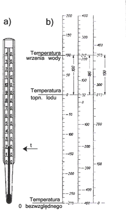
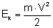
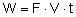
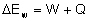
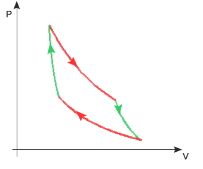
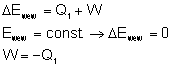
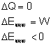
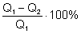
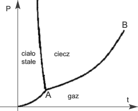

|
|||
|
| • Mechanika » Kinematyka, Dynamika, Praca, moc, energia, Grawitacja, Ruch obrotowy, Statyka, Relatywistyka • Fizyka molekularna i ciepło » Termodynamika, Gazy, Ciecze, Ciała stałe • Elektryczność i magnetyzm » Elektrostatyka, Pole elektrostatyczne, Prąd elektryczny stały, Magnetyzm, Elektromagnetyzm • Zjawiska falowe » Ruch drgający i falowy, Akustyka, Drgania i fale elektromagnetyczne, Optyka • Elementy fizyki wpółczesnej » Dualizm korpuskularno-falowy, Fizyka atomowa, Fizyka jądrowa • Astronomia » Astronomia • Zagadnienia matematyczne » Wektory, Pochodna funkcji, Logarytmy • Tablice » Jednostki wielkości fizycznych, Właściwości fizyczne, Właściwości elektromagnetyczne i falowe, Stałe fizyczne, Tablice matematyczne • O stronie » Autorzy, Bibliografia | |
|
Każdy z nas, już od najmłodszych lat, zna pojęcie ciepła i stosuje je często w życiu codziennym. Mówimy, że w zimie jest zimno, a w lecie ciepło, albo woda jest lodowata, albo gorąca itd. Ale opis ciepła opisywany przez nas ma bardzo subiektywny charakter. Bowiem może się zdarzyć, że komuś jest dzisiaj zimno i ubrał trzy swetry, a innemu gorąco i chodzi w koszuli z krótkim rękawem. Jest to ich subiektywne wrażenie, czy dzień jest ciepły, czy zimny. Fizyka jest nauką ścisłą i nie można stosować subiektywnych odczuć do prowadzenia badań. Dlatego też zaszła potrzeba by sprawę ciepła uogólnić i uniezależnić od zmysłów ludzkich.
Do tego celu powstał termometr, który mierzy temperaturę i jest niezależny od tego, co czuje człowiek. Termometr mierzy temperaturę i pokazuje wynik w postaci liczbowej. Liczby te nazywamy stopniami, które są wyrażone w odpowiedniej skali. Wyróżniamy trzy najpopularniejsze skale: Celsjusza, Fahrenheita, i Kelvina. Ta ostatnia jest uznana za obowiązującą skalę w układzie jednostek SI, czyli używając tej skali prowadzimy większość obliczeń. Skale termometryczne można przeliczać według wzorów: gdzie: T - temperatura w skali Kelwina t - temperatura w skali Celsjusza - temperatura w skali Fahrenheita lub stosując wykres skali jak poniżej:  Więc wiemy, że za pomocą termometru możemy zmierzyć temperaturę jakiegoś ciała. I to jest prawdą. Ale jeżeli włożymy termometr do gorącej wody i po chwili wskazanie ustali się na jakiejś temperaturze, to czy termometr wskazał temperaturę wody? Wydaje się, że tak. Ale jednak nie do końca. Otóż termometr nie pokazuje temperatury (w naszym przykładzie) wody. Bo jeżeli termometr wyciągniemy za wcześnie, to wskazana temperatura będzie mniejsza od temperatury wody. Ale mimo wszystko termometr coś wskazał. Bowiem wartość temperatury pokazanej przez termometr to temperatura... termometru. Łatwo zauważyć, że dwa stykające się ciała dążą do wyrównania swoich temperatur. Więc termometr włożony do wody, ogrzewa się. Po jakimś czasie ma taką samą temperaturę jak woda, więc wskazana przez niego wartość temperatury będzie temperaturą wody. Mówimy wówczas, że termometr i woda znajdują się w równowadze termicznej. Termometr możemy wykorzystać do sprawdzania czy dwa ciała są w równowadze termicznej. Jak to zrobić mówi zerowa zasada termodynamiki.
Termometr może być tym ciałem C. Wówczas mierzymy temperaturę ciała A, a następnie mierzymy temperaturę ciała B. Z równowagą termiczną mamy do czynienia, jeżeli temperatury tych ciał są takie same. Pierwsza zasada termodynamiki
Kiedy mówiliśmy o pracy i energii ciał, to pojawił się temat zasady zachowania energii. Pomyślmy chwilę nad pewnym przykładem. Jeżeli mamy klocek o masie m poruszający się z prędkością V, a tarcie między klockiem a podłożem wynosi T. Jeżeli chcemy, by klocek ten poruszał się ze stałą prędkością to musimy działać na niego siłą F taką, że F=T i zwrot wektora siły F jest zgodny ze zwrotem prędkości klocka. Wówczas energia kinetyczna klocka wynosi:  . Cały czas jednak wykonujemy pracę nad tym klockiem:  . Z zasady zachowania energii wiemy, że jeżeli wykonamy nad ciałem pracę to całkowita energia ulega zmianie. Energia kinetyczna zaś pozostaje bez zmian. Gdyby ten klocek poruszał się dosyć szybko, a i tarcie było by duże, to po chwili takiego ruchu moglibyśmy zauważyć, że ciało to ma wyższą temperaturę niż przed rozpoczęciem ruchu. Jest to spowodowane właśnie tarciem. Siła F przykładana przez nas powoduje, stałą wartość prędkości, ale to siła tarcia wykonuje pracę nad ciałem. Praca ta jest zamieniana na ciepło. Dlatego też temperatura klocka wzrasta.
Zatem jeżeli dostarczymy do jakiegoś układu ciepła, to zwiększymy jego energię całkowitą. Załóżmy, że mamy naczynie zamknięte wypełnione powietrzem. Ogrzejmy je trochę. Wówczas możemy powiedzieć, że zwiększyliśmy energię całkowitą tego układu. Ale jeżeli zwiększyliśmy temperaturę powietrza w naczyniu, to cząsteczki powietrza poruszają się szybciej niż przed procesem ogrzewania. Więc dostarczając ciepła zwiększyliśmy energię kinetyczną cząsteczek powietrza.
Możemy już sformułować pierwszą zasadę termodynamiki:
 Pomyślmy przez chwilę nad konsekwencjami tych zależności. Jeżeli tłok wypełniony jest powietrzem i zwiększymy temperaturę tego powietrza przez dostarczenie ciepła, to zwiększymy średnią energię kinetyczną każdej cząsteczki gazu. Jeżeli zwiększona jest ta energia kinetyczna to na tłok gaz ten wywiera większe ciśnienie niż poprzednio. A zwiększone ciśnienie może spowodować przesunięcie tłoka. Więc kiedy ogrzewamy gaz, może on wykonać pracę. Przepływ ciepła
Przepływ ciepła między ciałami o różnej temperaturze może odbywać się trzema sposobami: przez przewodzenie, unoszenie (konwekcję) i promieniowanie. Zjawisko przenoszenia ciepła od ośrodka o temperaturze wyższej do ośrodka o temperaturze niższej za pośrednictwem ciała - zwanego wymiennikiem ciepła - wewnątrz którego tworzy się spadek temperatury, nazywamy przewodzeniem ciepła. Ilość ciepła Q przewodzonego przez ciało jest wprost proporcjonalna do czasu przewodzenia Zjawisko ruchu ciepła polegające na tym, że ciepło pobrane w pewnym miejscu przez cząsteczki gazu lub cieczy jest przenoszone razem z tymi cząsteczkami i oddane chłodniejszemu otoczeniu w innym miejscu, nosi nazwę konwekcji, zaś przenoszące ciepło prądy cząsteczek cieczy lub gazu - prądów konwekcyjnych (unoszenia). Istota zjawiska przenoszenia ciepła na odległość bez pośrednictwa substancji polega na tym, że ciało o wystarczająco wysokiej temperaturze emituje ze swej powierzchni promieniowanie cieplne, które rozchodzi się zarówno w ośrodkach materialnych jak i w próżni. Ciepło właściwe
Powszechnie wiadomo, że by zwiększyć temperaturę substancji, należy ją ogrzać. Ilość ciepła pobieranego przy ogrzewaniu jest wprost proporcjonalna do masy ogrzewanego ciała i uzyskanego przyrostu temperatury oraz jest zależna od rodzaju ciała. c - współczynnik proporcjonalności, zwany ciepłem właściwym - określa ilość ciepła potrzebną do ogrzania 1 kg materiału o 1K Wielkość ta jest charakterystyczna i inna dla każdej substancji. Do obliczeń wykorzystuje się tabele, w których podane są wyliczone już te wartości. Stany skupienia
Tradycyjny podział wyróżnia trzy stany skupienia: stały, ciekły i gazowy. Prawie wszystkie substancje (z wyjątkiem niektórych związków organicznych) mogą przechodzić z jednego stanu skupienia w inny. Rozróżnia się przy tym następujące przejścia fazowe:
TOPNIENIE I KRZEPNIĘCIE Punktem topnienia lub temperaturą topnienia nazywamy stałą temperaturę, w której odbywa się topnienie i krzepnięcie substancji pod normalnym ciśnieniem. Ściśle określoną temperaturę topnienia mają ciała o budowie krystalicznej. Co się jednak dzieje, kiedy lód ogrzejemy do temperatury 0°C. Każdy obserwator zauważył, że lód podczas topnienia nie zamienia się momentalnie w wodę, lecz topi się stopniowo. Także jeżeli ochładzamy wodę i osiągnie ona temperaturę 0°C to ona zamarza. Więc w końcu dla tej temperatury występuje lód czy woda? A występuje jedno i drugie. A rozróżnia te stany energia wewnętrzna substancji. By lód roztopił się do postaci wody nie tylko wystarczy go ogrzać do temperatury 0°C i nagle stanie się wodą, lecz kiedy osiągnie temperaturę topnienia, należy dostarczyć mu odpowiedniej ilości energii by się roztopił i otrzymujemy wodę o temperaturze 0°C. Wówczas ogrzewamy wodę i dopiero teraz możemy ją ogrzać do wyższych temperatur. Ale należy pamiętać, że woda i lód ma inne ciepło właściwe. Tak samo jest z innymi substancjami. Każda substancja ma inne ciepło właściwe w różnych stanach skupienia. Ilość ciepła Q pobierana przy topnieniu jest wprost proporcjonalna do masy m topionego ciała i zależna od jego rodzaju. - współczynnik proporcjonalności, zwany ciepłem topnienia - określa ilość energii cieplnej niezbędnej do stopienia 1 kg danego materiału, uprzednio doprowadzonego do temperatury topnienia W wyniku dokładnych pomiarów stwierdzono, że ciało oddaje przy krzepnięciu ściśle tyle ciepła, ile go pobiera przy topnieniu, co oznacza, ze ciepło krzepnięcia jest równe ciepłu topnienia. PAROWANIE I SKRAPLANIE Stałą temperaturę, w której odbywa się wrzenie cieczy pod normalnym ciśnieniem atmosferycznym, nazywamy temperaturą lub punktem wrzenia. Kiedy wodę ogrzejemy do temperatury 100°C, podczas parowania zachodzi podobny proces jak przy topnieniu. Ilość ciepła Q potrzebna do odparowania cieczy znajdującej się w temperaturze wrzenia jest wprost proporcjonalna do jej masy m, a ponadto jest zależna od rodzaju cieczy i ciśnienia - współczynnik proporcjonalności, zwany ciepłem parowania - określa ilość energii cieplnej pobieranej przez 1 kg cieczy przy przejściu jej w parę. Bilans ciepła
Jak wiemy energia cieplna przechodzi zawsze z ciała cieplejszego do chłodniejszego. Zjawisko to rozpatrujemy w bilansie cieplnym. Rozwiązując zadanie z bilansu ciepła stosujemy zawsze zasadę, iż:
- ciepło pobrane - ciepło oddane Rozpatrzmy to na przykładzie. Do wody o masie 0,5 kg i temperaturze 20°C wlewamy wodę o masie 1 kg i temperaturze 60°C. Obliczmy temperaturę końcową wody po wyrównaniu się temperatur. - szukana temperatura Zapisujemy wzory na ciepło pobrane i ciepło oddane. Pobierać ciepło będzie woda o niższej temperaturze, oddawać woda o wyższej. Porównujemy oba równania: Zasadę zachowania ciepła wykorzystano w przyrządach służących do wyznaczania ciepła właściwego ciał stałych i cieczy, zwanych kalorymetrami. Cykl Carnota. II zasada termodynamiki
Cykl Carnota jest to sekwencja przemian substancji roboczej, która dzięki tym przemianom wykonuje pracę. Cykl ten składa się kolejno z:
 Pierwsza przemiana to izotermiczne rozprężanie. Podczas tej przemiany dostarczamy ciepła do układu (oznaczmy ilość dostarczonego ciepła przez Q1). Miarą energii wewnętrznej gazu jest temperatura. Podczas przemiany izotermicznej temperatura gazu nie zmienia się. Oznacza to, że całe ciepło dostarczone zamieniane jest na pracę:  Następnie mamy proces sprężania adiabatycznego. Przypomnę, że proces adiabatyczny to taki proces, w którym nie zachodzi wymiana ciepła z otoczeniem. Sprężanie zaś zostaje wykonane kosztem energii wewnętrznej. Więc przyrost energii wewnętrznej jest ujemny.  Po tej przemianie ma miejsce izotermiczne sprężanie z procesem oddawania ciepła. Oznaczmy ilość odebranego ciepła przez Q2. Ostatnią przemianą jest proces adiabatycznego sprężania substancji roboczej. Podobnie jak przy procesie drugim, tu także nie ma wymiany ciepła z otoczeniem. Praca wykonana przez siły zewnętrzne podczas sprężania, powoduje przyrost energii wewnętrznej. Przyrost ten jest dodatni. Urządzenie, które wykonuje cykl Carnota to tzw. silnik cieplny. Jego sprawność możemy obliczyć według wzoru:  Żeby silnik cieplny mógł zamieniać ciepło na pracę musi współpracować z dwoma źródłami ciepła: grzejnicą i chłodnicą. Z grzejnicy pobierane jest ciepło a oddawane do chłodnicy. Ciepło pobrane częściowo zamieniane jest na pracę, a częściowo oddawane do chłodnicy. gdzie: T1 - to temperatura grzejnicy, a T2 - temperatura chłodnicy. Miarą pracy wykonanej przez silnik cieplny jest pole figury ograniczonej wykresami. Na podstawia analizy silnika cieplnego możemy sformułować drugą zasadę termodynamiki. Występuje ona we wielu wersjach:
Padło tu sformułowanie perpetuum mobile drugiego rodzaju. Wiemy już, że takie urządzenie nie istnieje. A czy istnieje perpetuum mobile pierwszego rodzaju i czym ono jest? Otóż perpetuum mobile to marzenia ludzi do czasu poznania zasady zachowania energii. Jest to bowiem taka maszyna, która potrafiłaby poruszać się bez konieczności dostarczania jej energii. Szczytem marzeń konstruktorów perpetuum mobile jest maszyna, która sama wykonuje pracę. Ale teraz wiemy z zasady zachowania energii, że takie urządzenie nie jest możliwe. Wykres stanu. Temperatura krytyczna
Współistnienie stanów skupienia dogodnie jest przedstawić graficznie w postaci wykresu ciśnienia w funkcji temperatury, zwanego wykresem stanu.  Punkt potrójny to punkt, w którym trzy fazy istnieją ze sobą w równowadze (na rysunku jest to punkt A). Temperaturę, w której zanika różnica fazy ciekłej i gazowej substancji, nazywamy temperaturą krytyczną, a odpowiadające jej ciśnienie - ciśnieniem krytycznym. A więc im wyższa temperatura tym mniej różni się faza ciekła i gazowa danej substancji. W temperaturze krytycznej różnica ta zanika zupełnie i ciepło parowanie jest równe zeru. Nie można tu już właściwie mówić o parowaniu, lecz o samorzutnej zamianie cieczy w parę, bez potrzeby pobierania ciepła. Temperatura krytyczna jest najwyższą temperaturą, w której substancja może istnieć jako ciecz. Jeżeli para znajduje się w temperaturze wyższej niż krytyczna (nazywamy ją wtedy gazem), nie jesteśmy w stanie jej skroplić, stosując nawet największe ciśnienie. Okaże się, że w tym przypadku niezbędne jest obniżenie temperatury gazu poniżej wartości krytycznej. Entropia. III zasada termodynamiki
Entropia to termodynamiczna funkcja stanu będąca miarą nieuporządkowania układów, a więc także całego wszechświata. Całkowita entropia układu jest równa: k - stała Boltzmanna p - prawdopodobieństwo, że układ znajduje się w danym stanie Funkcja stanu to funkcja zależna tylko od stanu układu. Nie zależy zatem od jego historii. Zmiana funkcji stanu zależy tylko od stanu początkowego i końcowego, a nie od rodzaju przemiany (równowagowej czy też nie), która do tej zmiany doprowadziła. Kryształ doskonały to wyidealizowany dla celów obliczeń termodynamicznych model rzeczywistych kryształów. Kryształ doskonały spełnia następujące warunki:
Przykład: Kryształ doskonały ma w temperaturze O K entropię równą S = O, gdyż jego stan może być zrealizowany tylko na jeden sposób (żadna z cząsteczek nie może się "ruszyć" ani zamienić miejscem z inną). Jest to jedno ze sformułowań trzeciej zasady termodynamiki. Trzecia zasada termodynamiki głosi, że entropia substancji tworzących doskonałe kryształy dąży do O gdy temperatura dąży do O K. Praktyczne obliczenie p jest w większości przypadków technicznie niemożliwe, można jednak oszacowywać całkowitą entropię układów poprzez wyznaczenie ich całkowitej pojemności cieplnej poczynając od temperatury O K do aktualnej temperatury układu i podzielenie jej przez temperaturę układu.
|
| Copyright © 2003- fizyka.kopernik.mielec.pl |